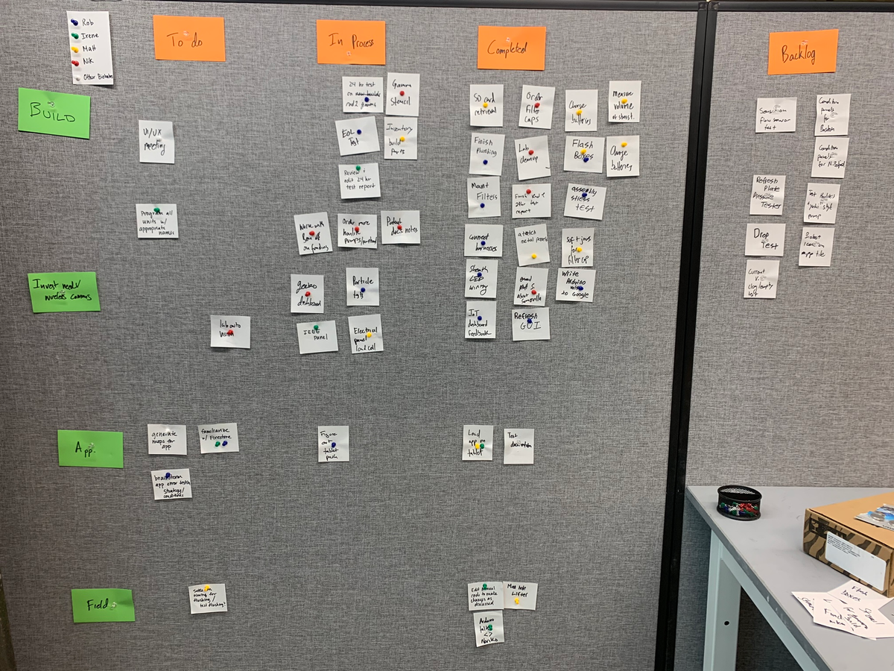
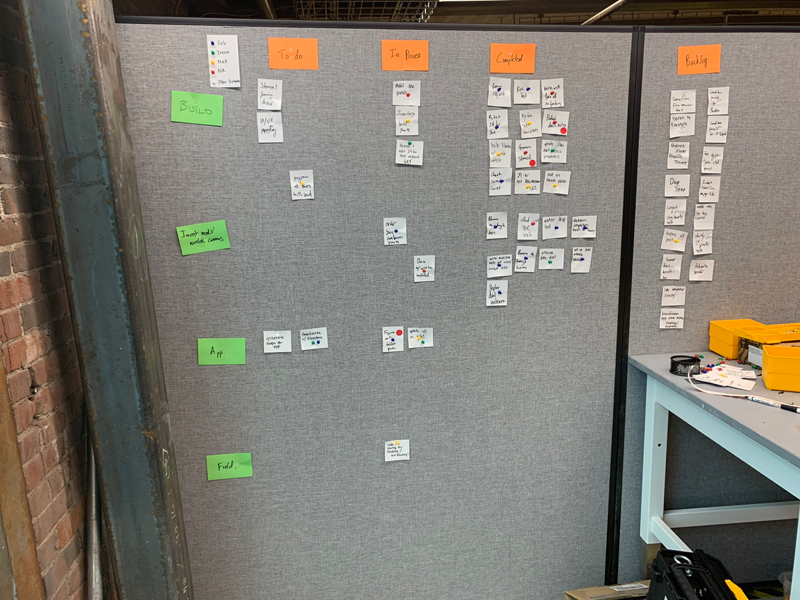

Scrum, a bit more 'tacky' than your average Jira board
Role
Engineering Project Manager
Summary
Lead daily SCRUM standups using Agile methodology to unify hardware, software, electrical, and mechanical development all under one umbrella. Colored tacks represented owner of tasks. All tasks were self regulated and assigned during the noon standups, significant revisions and guidance were provided during weekly 1on1’s with engineering team.
Photos
 Fig. 1: Example of daily standup
 Fig. 2: Red dots indicated significant delay or help needed from another team-mate, particular attention given to red dot tasks.